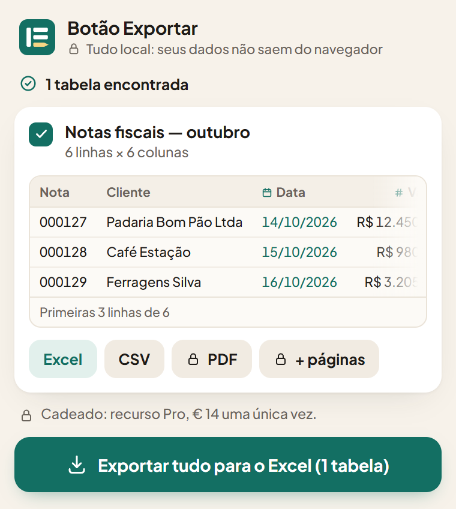

Qualquer tabela da web, em um Excel limpo.
Um clique e a tabela vira uma planilha pronta para trabalhar: números que dá para somar, datas que dá para ordenar, zero à esquerda mantido. Feito para os sistemas antigos da empresa que não têm botão Exportar.
Sem cadastroNada sai do seu navegador10 idiomas
Notas fiscais — outubro
| Nota | Cliente | Data | Valor | CEP |
|---|---|---|---|---|
| 000127 | Padaria Bom Pão Ltda | 14/10/2026 | R$ 12.450,00 | 01310-100 |
| 000128 | Café Estação | 15/10/2026 | R$ 980,50 | 04538-132 |
| 000129 | Ferragens Silva | 16/10/2026 | R$ 3.205,75 | 20040-002 |
| 000130 | Clínica Sorriso | 20/10/2026 | R$ 1.140,00 | 30130-010 |
| 000131 | Gráfica Ribeira | 22/10/2026 | R$ 27.300,00 | 40010-000 |
| 000132 | Doceria Lago Azul | 27/10/2026 | R$ 615,20 | 80010-010 |

Copiar e colar bagunça seus dados. Aqui não.
Uma tabela colada no Excel parece certa até você tentar usar. Estas são as coisas que o Botão Exportar corrige sozinho, antes de o arquivo chegar até você.
Números continuam números
Valores com símbolo de moeda e separador de milhar viram números de verdade, em qualquer formato: R$ 1.234,56, $1,234.56, 1.234,56 €. O separador é deduzido a partir da coluna inteira.
Datas viram datas
14/10/2026, 10/14/2026, Oct 14, 2026: a ordem de dia e mês é lida a partir da coluna, e as datas ordenam e filtram do jeito certo.
Códigos mantêm os zeros
CEP, número de nota, CPF, CNPJ e telefones ficam exatamente como estão escritos. Chega de 000127 virar 127.
As tabelas que outras ferramentas não enxergam
Tabelas dentro de iframes, uma primeira coluna fixa ao lado das que rolam, cabeçalhos guardados em uma tabela separada, dados divididos em várias páginas. Ele encontra tudo e junta de novo.
Três passos, nada para configurar
Fixe o ícone
Depois de instalar, clique na peça de quebra-cabeça no canto superior direito do navegador e fixe o Botão Exportar: assim ele fica sempre a um clique.
Abra a página com a sua tabela
Um portal da empresa, uma tela antiga do ERP, um relatório, uma página pública. Clique no ícone: as tabelas aparecem em uma lista, e cada uma se ilumina na página quando você passa o mouse por cima.
Escolha Excel ou CSV
O arquivo é montado no seu navegador e baixado, já formatado e com os filtros ligados. É só abrir e trabalhar.
Os dados da empresa ficam no seu navegador
O Botão Exportar lê a tabela e monta o arquivo no seu computador. Sem servidores, sem cadastro, sem rastreamento. Por isso dá para usar com segurança também nos portais internos.
Grátis no dia a dia. O Pro é um pagamento único.
Grátis
€ 0 para sempre
- Exporte uma tabela por vez para Excel ou CSV
- Toda a limpeza automática
- Excel formatado, com filtros ligados
- Sem limite de linhas
Pro
€ 14 uma vez só, seu para sempre
- Tudo o que tem no Grátis
- Junta uma tabela dividida em várias páginas, clicando em “Próximo” para você
- Exportações salvas que você repete com um clique
- Exportação para PDF
- Várias tabelas em um só arquivo Excel
Guias
Arrumando na mão uma tabela colada? Estes guias explicam por que ela quebra e como corrigir, com ou sem a extensão.
Como exportar uma tabela de um site para o Excel
Copiar e colar, o “Da Web” do Excel ou uma extensão: o que cada um resolve e onde falha.
Ler o guia →
Por que o Excel apaga o zero à esquerda, e como manter
CEP, CPF e telefones que perdem o primeiro zero ou viram 3,33E+10.
Ler o guia →
Números colados de um site viram texto no Excel
Somas que dão 0, e o 1,250 que vira 1,25: vírgulas, pontos e como corrigir.
Ler o guia →
Experimente na sua tabela.
Grátis, sem cadastro, alguns segundos para instalar. Ou experimente antes em uma tabela de exemplo.